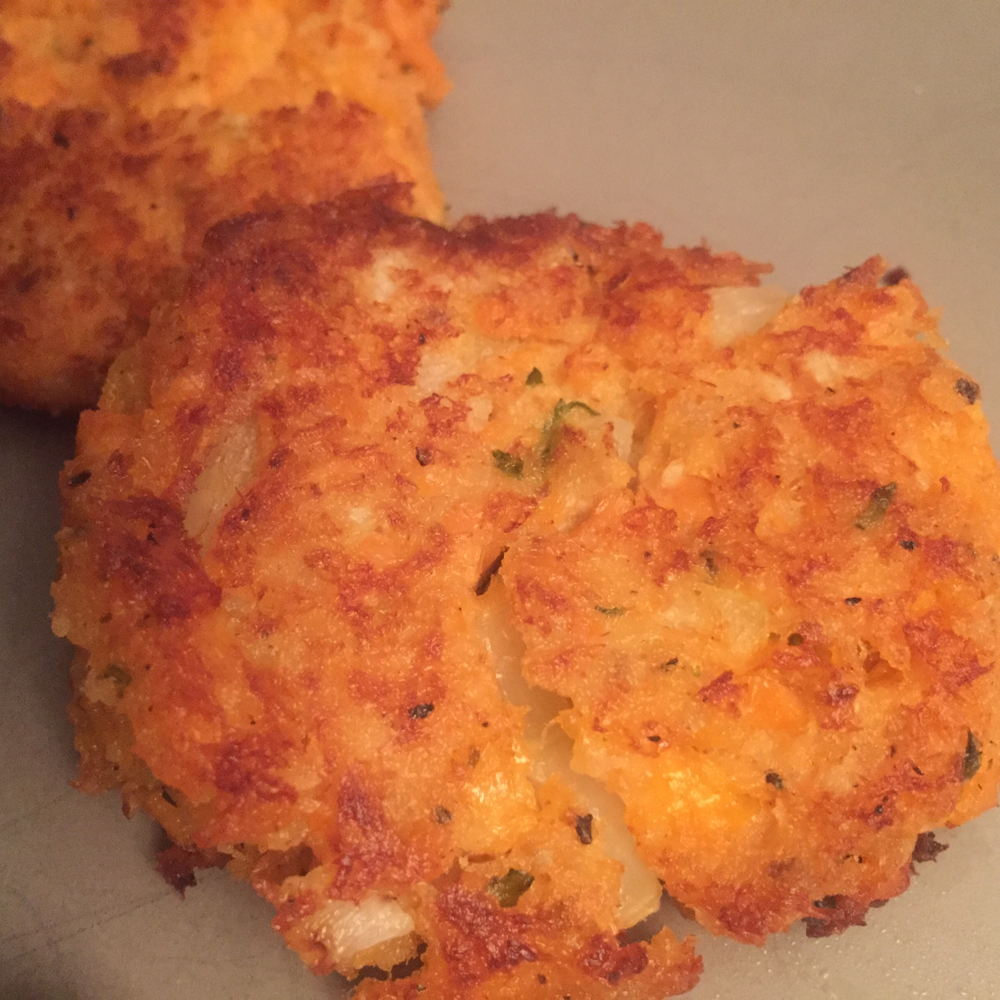

Salmon Patties

These salmon patties are delicious for lunch or dinner.
Ingredients
- 1 (14.75 ounce) can canned salmon
- 1 egg
- ¼ cup chopped onion
- ½ cup seasoned dry bread crumbs
- 1 tablespoon olive oil
Directions
- Drain and reserve liquid from salmon. Mix egg, onion, bread crumbs and salmon together.
- Make into patties. If mixture is too dry to form into patties, add reserved liquid from salmon.
- In a frying pan, heat olive oil. Place patties in pan. Brown on each side, turning gently. Drain on paper towels and serve.
Back